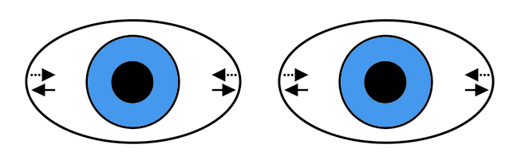

☰
Nystagmus
Physiologic Nystagmus

What is it?
Non-pathologic involuntary rhythmic ocular oscillations
Low-amplitude horizontal jerk nystagmus with its fast phase in the direction of gaze
Limited to extreme side gaze
May be difficult to distinguish from pathologic gaze-evoked (sidebeat) nystagmus
What does it look like?
Eyes oscillate horizontally with low amplitude only in the extremes of side gaze
Physiologic Nystagmus
Fast phase in the direction of gaze
Abducting eye may oscillate with higher amplitude than the adducting eye
Nystagmus stops after four or fewer beats
No associated visual symptoms
No pertinent neuro-ophthalmic abnormalities
What else looks like it?
Pathologic horizontal gaze-evoked (“sidebeat”) nystagmus
Physiologic Nystagmus
Infantile nystagmus syndrome
Infantile Nystagmus
What should you do?
Assure yourself that the oscillation meets criteria for physiologic nystagmus
Exclude medication or substance use
Exclude pathologic horizontal gaze-evoked (sidebeat) nystagmus
Trap:
mild pathologic horizontal gaze-evoked (sidebeat) nystagmus can look like physiologic nystagmus, so do not dismiss this form of nystagmus if other pertinent neurologic manifestations are present
What will happen?
This nystagmus may become evident only when patients are tired, sick, or intoxicated
Patients often undergo needless evaluation when this form of nystagmus is the sole manifestation
Nystagmus
Nystagmus Overview
Physiologic Nystagmus
Infantile Motor Nystagmus
Infantile Sensory Nystagmus
Monocular Pendular Nystagmus of Childhood
Spasmus Nutans
Peripheral Vestibular Nystagmus
Gaze-evoked Horizontal (Sidebeat) Nystagmus
Upbeat Nystagmus
Downbeat Nystagmus
Acquired Binocular Pendular Nystagmus